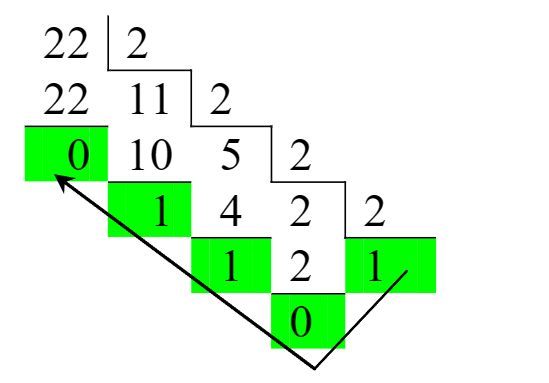

Система счисления (CC) - это набор символов цифр для представления величин. Системы счисления бывают позиционные и непозиционные. В позиционных системах счисления каждая цифра всегда обозначается одним символом . Благодаря этому, у чисел в позиционных системах счисления есть такая характеристика как разрядность. Разрядность - это количество цифр в записи числа. По разрядности числа можно судить о его величине чем больше разрядов, тем больше число. Примером позиционной системы счислениИЯ являются Арабские цифры. В непозиционных СС одна цифра может быть представлена несколькими символами, поэтому количество разрядов в непозиционных числах определить невозможно и понятие разрядности у них отсутствует. Из- за этого мы не можем умножать непозиционные числа, возводить их в степень и т. д.
У любой позиционной системы счисления есть основание. Основание системы счисления - это число, которое показывает, сколько символов используется для обозначения цифр. Или проще говоря: Основание системы счисления - это количество цифр в системе счисления. Также основание системы счисления показывает во сколько раз следующий (старший) разряд больше предыдущего (младшего).
У каждого разряда в позиционной СС есть вес, который зависит от его положения в записи числа. Вес разряда - это основание системы счисления, возведенное в степень, равную номеру разряда. Разряды всегда нумеруются с нуля, то есть младший разряд (крайний справа), является нулевым а не первым. У старших разрядов (те которые справа) вес больше чем у младших (те которые слева). Системы счисления собственно и называют позиционными, потому что одна цифра имеет разный вес (величину), в зависимости от своей позиции в записи числа.
Любое число в позиционной системе счисления можно разложить на сумму произведений веса разряда на значение соответствующего разряда следующим образом:
X = an-1 · Xn-1 + an-2 · Xn-2 +...+ a2 · x2 + a1x1 + a0 · x0;
где: Х - конечное число;
a - основание системы счисления (количество символов, из которого составляются числа);
п - разрядность числа (количество цифр в записи числа);
х - значение разряда (произвольная цифра из множества возможных);
a0, a1, a2 - весовые коэффициенты разрядов.
Например, число 2 849 в десятичной системе счисления можно записать следующим образом:
2 849 = 103 · 2 + 102 · 8 + 101 · 4 + 100 · 9 = 1000 · 2 + 100 · 8 + 10 · 4 + 1 · 9 = = 2000 + 800 + 40 + 9 = 2 849;
здесь 10 - основание системы счисления (десятичная система); показатели степени 0 1 2 3 — номера соответствующих разрядов (счет всегда начинается с нуля); основание системы счисления, возведенное в степень равную номеру разряда, называется весом разряда; цифры 2 4 8 и 9 значения соответствующих разрядов.
Наиболее распространенной позиционной системой счисления является десятичная, ее основание (а) равно 10. Существуют и другие позиционные системы счисления, например двоичная (а = 2), восьмеричная (а = 8) и шестнадцатеричная (a = 16). За основание системы счисления можно принять любое натуральное число, следовательно систем счисления может быть столько же сколько И натуральных чисел, просто наибольшее распространение в вычислительной технике получили вышеперечисленные.
Одно и тоже число можно представить в различных системах счисления, при этом оно не изменит свою величину. Для примера рассмотрим таблицу, в которой представлены числа от 0 до 15 в различных системах счисления.
| Decimal (a = 10) | Binary (a = 2) | Octal (a = 8) | Hexadecimal (a = 16) |
|---|---|---|---|
| 0 | 0000 | 0 | 0 |
| 1 | 0001 | 1 | 1 |
| 2 | 0010 | 2 | 2 |
| 3 | 0011 | 3 | 3 |
| 4 | 0100 | 4 | 4 |
| 5 | 0101 | 5 | 5 |
| 7 | 0111 | 7 | 7 |
| 8 | 1000 | 8 | 8 |
Как видно из таблицы 1, одно и тоже число в различных системах счисления имеет разную разрядность. Следовательно, при одной и той же разрядности, в различных системах счисления, можно записать различное количество возможных чисел (комбинаций символов). Для того, чтобы определить сколько всего можно записать чисел (набрать комбинаций) в заданной системе счисления следующую формулу:
N = an;
где: N - количество комбинаций; а основание системы счисления; п разрядность числа.
Таким образом, при переводе числа из десятичной СС в любую другую используя правило 1 можно сделать проверку, используя правило 2.
Рассмотрим пример: десятичное число 22, необходимо перевести в двоичную систему счисления. Для этого, будем делить его на 2, потому что переводим в двоичную систему счисления, и записывать остатки от деления.
2210 = ?2;
2210 = 1 01102;
Сделаем проверку по формуле (1), заметим что а = 2, n = 5:
X = 24 · 1 + 23 · 0 + 22 · 1 + 21 · 1 + 20 · 0 = 16 + 0 + 4 + 2 + 0 = 22;
Как видите все совпадает.